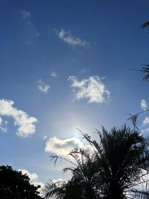
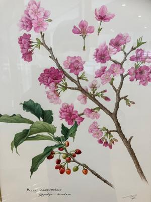

うるがいの話 ある日
最新: いろいろな楽譜【うるがいの話 ある日】とは 一日だけのプログです
『うるがいの話』の最新一日だけのプログで、通信料が少なく経済的だ。カニの画像をクリックすると全ての日付が載る『うるがいの話』サイトを表示します
|
|
【うるがいの話】 うるがい(ｳﾙｶﾞｲ urugai)とは、『もずくがに』の名前でとても大きくなります。 |
|---|---|
|
|
【カミマヤーの話】 猫のことを方言でマヤーといいます。カミマヤー（kamimayaa）とは、神の猫のことです。 |
|
【たながぁの音楽】 たながぁ（ﾀﾅｶﾞｰ tanagaa）とは手長えびのことで、何種類かあり大きいのは車 エビぐらいになります。 |

|
【ぶながぁの話】 ぶながぁ(ﾌﾞﾅｶﾞｰ bunagaa)とは、赤い髪の毛、赤い身体、そして身長は１ｍ２０ｃｍ ぐらい、川の蟹を食べているの目撃された。場所は沖縄県国頭郡大宜味村のと ある村僕の隣近所に住んでいる爺さんから、聞いた話です。 |
|
|
【ギーマの話】 ギーマ(giima)とは、山原の里山に咲くスズランに似た、 花を付けます。実は食べられます、 気が付くと口の周りが紫になっています。 |
2023年07月13日 (木）いろいろな楽譜
15:52

ギターを弾き始めたとき、６番目に楽譜ソフトで作成した曲、カントリロー
ドの三線版を作ることにした。人気がある曲なのかネットで楽譜は、容易に
探せた。ところがである、多ければいいというものではない。これらの違い
を見極めるまで１週間ほどかかった。
1.一番正確かな楽譜ピアノ６５小節譜面を押さえる誰かの親指が映っていた
歌詞のキーは、E(ミ):chordsはA、Capo 2 frets だと G）
John Denver-Take Me Home, Country Roads-SheetMusicGiant.pdf
2.ギターの楽譜 ギター ６４小節 Capo 2
歌詞のキーは、E(ミ):chordsはC）
不規則な４分の２拍子（ひょうし）が入る位置が１番目の楽譜と違う
２番目の歌詞を省略している
3.歌詞のみの楽譜 ５０小節
歌詞のキーは、D(レ):chordsはG
1-4b60ad8cb6.jpg
インロト無しでいきなり歌詞に、２番目の歌詞もない、アウトロもなし
ただし、他のピアノやギターの楽譜と比べると本来の音符が分かる
不規則な４分の２拍子が入る位置が１番目の楽譜と同じ
4.商品の紹介の楽譜（後ろは意図的に切れている）
ピアノ 尻切れトンボの７０小節
歌詞のキーは、C(ド):chords表記なし
不規則な４分の２拍子（ひょうし）は、なし（反復表記を避けるベタ記述
で不規則を回避）
EMR3516C.pdf
で、これらを参考に作成したのが、ギターのカポをつけるのが面倒くさいの
でカポ無しでギターのコードが弾けるようにした。
カウントリロード 演奏時間 ３分９秒 動画ユチューブ

１５時４１分 ビットコインの総資産 ￥１２、２２７（↓６２５）